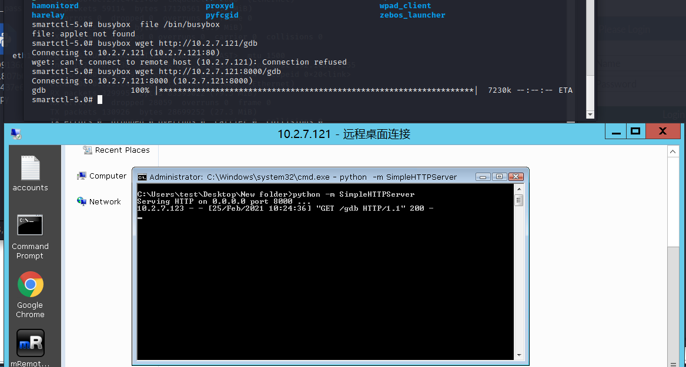
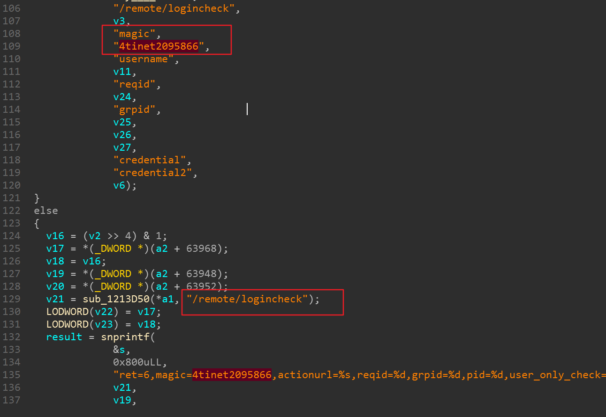

fortigate
条评论命令diagnose hardware smartctl，进入底层shell 。如果设置了busybox就可以用busybox来执行其他命令。
配置IP
1 | # config system interface |

如果eve-ng的环境与本机不在同一个网段，记得配置一下静态路由。
WEB 控制界面。
本地使用qemu-nbd访问qcow2文件
加载nbd模块
1
2[root@centos sm]# rmmod nbd
[root@centos sm]# modprobe nbd max_part=8映射qcow2文件到本地nbd设备上
1
2
3
4root@ubuntu-virtual-machine:~# qemu-nbd --connect=/dev/nbd0 /。。/data.qcow2
root@ubuntu-virtual-machine:~# mount /dev/nbd0 ./data/
root@ubuntu-virtual-machine:~# cd data/
root@ubuntu-virtual-machine:~/data# ls
解压缩
https://blog.csdn.net/weixin_30628077/article/details/99160087
fortigate 的包里有自己该过的 xz 压缩文件。所以，用正常的linux命令 xz -d 是解不了的。
先把 rootfs.gz 提取出来。
接着解压rootfs.gz ，可以用 gzip ，7zip，也可以用 Binwalk ，这里我用binwalk。或者：
cat rootfs | cpio -idmv
可以看到解完之后，里面还有xz 压缩的包。这3个文件不能用正常的xz 去解压。在 sbin 目录下，放着它解压用的文件。
注意，这样应该使用如下命令：
1 | chroot 绝对路径 sbin/xz -d bin.tar.xz |
单纯的切换chroot 会出错，应它的文件系统里还没有bin/bash。
在使用 tar -xvf bin.tar 解压出来就可以了。
上传文件
在同网段下，用python搭建一个Http server。在fortigate 中用wget下载gdb。

bin/Init.so
http服务
还是先从登陆过程开始。抓个登陆时发生的数据包，如下。
1 | POST /logincheck HTTP/1.1 |
找一找字符串 logincheck ，只有 Init.so库中有。用IDA进行分析。找到了如下位置。
有个ASPCOOKIE字段。结合上图，可以猜测 haystack 应该是接收回包的数据。
这里先不急于向下分析，从这个函数的开头来细看。
开头的函数sub_9D63A0 ，进入之后发现它有 /login?redir= 字符串拼接，根据burpsuit抓包的结果，这里应该就是登陆url的开始位置。
发送之后，返回的数据包如下。
1 | HTTP/1.1 200 OK |
后续继续分析，发现这里登陆的逻辑有点搞不清楚。所以去找找web页面上处理登陆的js代码。
login.js
在 /migadmin/js/ 下有 login.js.gz 解开里面就是 login.js。排版一下。
可以看到，最后是通过get_xmlhttp发送数据。继续在init.so 中分析。
在函数sub_A1CA00中看到设置 cookie的位置。这与登陆成功后返回的数据包的cookie内容一致，那么这个函数应该就是登陆成功后，设置cookie的地方。
去查看调用位置，有4处，其中最像登陆判断的函数是 sub_A1CCD0
怎么对密码和账户进行验证的？
密码给了s1，然后在下面的地方进行比较。
密码判断应该是在 sub_1A90BB0。
接着，我参考过去 fortinet 产品出的漏洞，文章链接在最后。在我的模拟环境中进行分析试试，模拟环境的fortigate 版本是 v5.4.4,build7605 (GA)。
CVE-2018-13382
这个漏洞可以修改SSL-VPN任意用户的密码。关键字：magic 4tinet2095866

CVE-2018-13382 是一个 magic 后门漏洞，我这里也找到了关键字 magic。根据分析，我的fortigate版本页也存在这个漏洞。具体操作如下。
创建一个user
首先创建一个用户，如下图。记得选 Enabled 启用一下。
用户名为 script ，密码是 123123。
配置 VPN
接着去 VPN -> SSL-VPN Portals ，选择 full-access 并编辑它，找到 Enable Split Tunneling，选择关掉。
然后去 SSL-VPN Settings 下。下面对一些配置进行说明，没有说明的直接照着下图进行配置：
- Listen on Interface(s)：port1 就是 fortigate 的 IP 地址。回到这篇文章的开头，配置IP那里，我用命令把 port1 配置为了 10.2.7.123.
- Listen Port：这里我写的10443，随意写一个没被使用的端口即可。
- All Other User/Groups：最后红框位置参考图中配置。
访问
配置完成后，访问：https://10.2.7.123:10443/remote/login?&&lang=en ，如下图，说明配置成功。
漏洞验证
首先，正常登陆，然后抓包，看一下返回的包。
可以看到密码位置也就是 credential=123123 ，我们也成功登陆了。接着我们输入错误的密码 qwe123 看看会返回什么。
右边返回的信息与上面不同，说明我们这时密码不对，没有成功登陆。接下来，加一个 magic=4tinet2095866 ，来把 script 用户的密码给它改成 qwe123。
从返回的包来看，成功改到了密码。接着用qwe123登陆一下，发现确实改成功了。
漏洞分析放在了另一篇文章。
后续还有分析慢慢补。
参考链接
Fortigate SSL VPN漏洞分析：
https://www.anquanke.com/post/id/184097
命令参考：https:
//zhuanlan.zhihu.com/p/85682076
设置SSL VPN：
https://docs.fortinet.com/document/fortigate/6.0.0/cookbook/807794/configuring-the-ssl-vpn